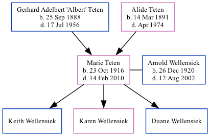

Marie Victoria Wellensiek (née Teten) 1916 - 2010
[ Home ] | [ Surnames Index ] | [ Family History ]The child of Gerhard Adelbert 'Albert' Teten and Alide Teten, , Marie was the second cousin twice-removed on the father's side of Stephanie Hardesty (née Teten), was born in Talmage, Otoe Co, Nebraska USA on Oct 23, 19161,2,3,4,5,6 and married Arnold Wellensiek (with whom she had 3 children: Keith, Karen and Duane) in Talmage on Jan 17, 19507 (St. Paul's Lutheran Church, rural Talmage).
During her life, she was living in Rock Creek, Otoe, Nebraska in 19201, in 19302 and in 19353; in Rock Creek, Otoe, Nebraska, USA on Apr 1, 19403; and in Cook5.
She died on Feb 14, 2010 in Cook, Johnson Co., Nebraska4,5,6 (age at Death: 93) and was buried in Otoe County, Nebraska, USA after Feb 14, 20106.
Parents
- Gerhard Adelbert 'Albert' was born on Sep 25, 1888
- Alide Maria was born on Mar 14, 1891
Children
- Keith
Citations
- 1920 United States Federal Census Ancestry.com Operations Inc (Age: 3; Marital Status: Single; Relation to Head of House: Daughter)
- 1930 United States Federal Census Ancestry.com Operations Inc (Age: 13; Marital Status: Single; Relation to Head of House: Daughter)
- 1940 United States Federal Census Ancestry.com Operations, Inc. (Age: 23; Marital Status: Single; Relation to Head of House: Daughter)
- Social Security Death Index Ancestry.com Operations Inc
- United States Obituary Collection Ancestry.com Operations Inc
- Web: Nebraska, Find A Grave Index, 1854-2011 Ancestry.com Operations, Inc.
- United States Obituary Collection Ancestry.com Operations Inc
Family Tree
Data (GEDCOM) maintained by Jay Weston Hannah, Omaha, Nebraska, USA.
Website generated by ged2site. Last updated on Jun 18, 2024.